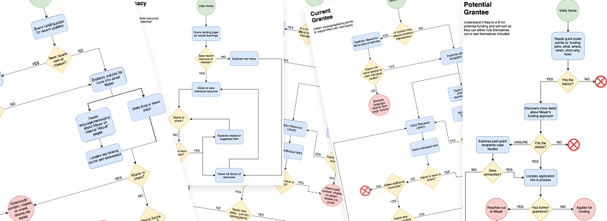
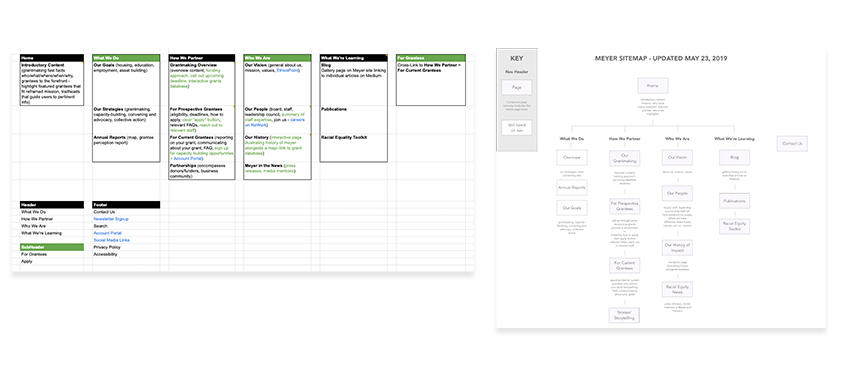
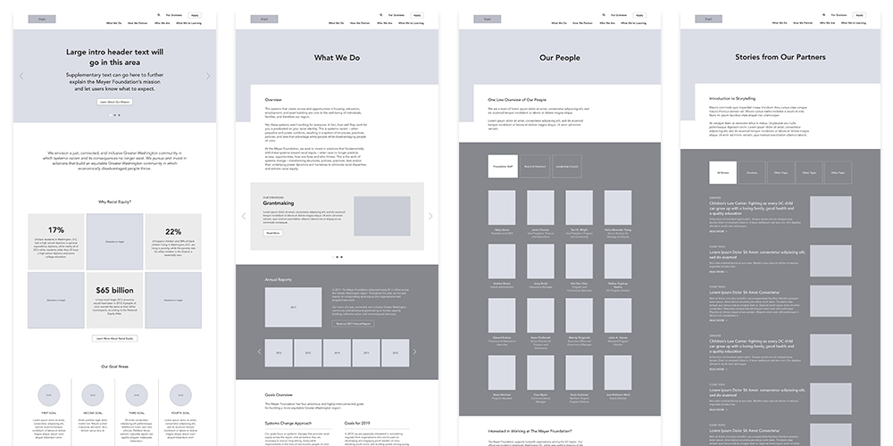

02
Architecture
Leading the Design
After completing our discovery phase, I was appointed lead designer for the scope of this project. I set out to address a number of improvements, including prioritizing Meyer's new mission/goal areas, creating clear pathways on the site to address various users' needs, and developing dynamic imagery that would help elevate succinct copy.
I began by writing user stories to identify the needs of Meyer’s key audience types. I used these stories to develop user flows and the new sitemap.
 From Flows to Wireframes
Using Adobe XD, I used these flows to map out a full set of wireframes for Meyer’s new website. I created an interactive wireframe prototype to help Meyer internally test the site.
